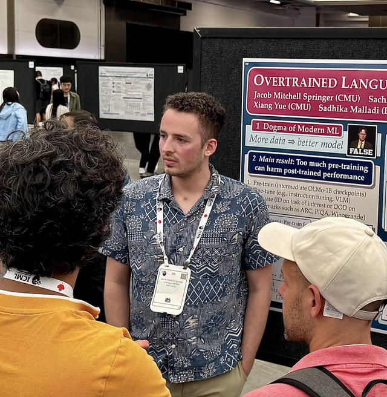
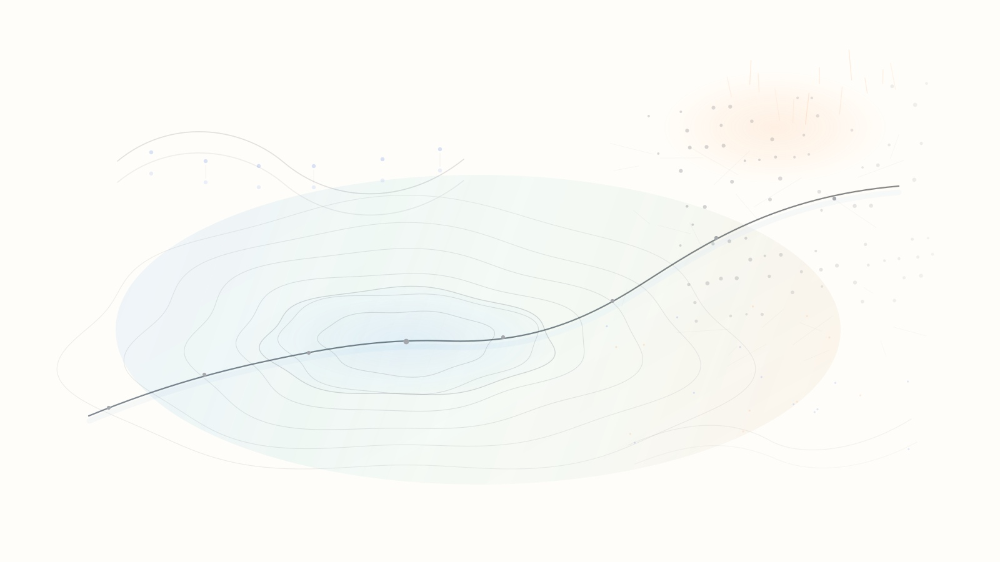

Annotations mitigate post-training mode collapse
Jacob Springer, Madhu Advani, Lukas Aichberger, Arwen Bradley, Eran Malach, Omid Saremi, Sinead Williamson, Preetum Nakkiran, Etai Littwin, Aditi Raghunathan
ICML 2026
I am a PhD student in the Machine Learning Department at Carnegie Mellon University, advised by Aditi Raghunathan, and supported by an NSF Graduate Research Fellowship.
I study how optimization shapes foundation models across pretraining, post-training, robustness, and inference-time behavior.

I'm excited about solving mysteries in machine learning. I'm broadly interested in the science of foundation models, with current work focused on optimization, robustness, and inference-time methods. Lately I've been thinking about how to train models that, by design, can be fine-tuned easily and robustly to new tasks, and how the choice of optimizer shapes that.
I did my undergrad at Swarthmore College, and have spent time at Cold Spring Harbor Laboratory, MIT, and Los Alamos National Laboratory, where I worked with many lovely people. Please reach out if you'd like to chat — I love talking about research.
Jacob Springer, Madhu Advani, Lukas Aichberger, Arwen Bradley, Eran Malach, Omid Saremi, Sinead Williamson, Preetum Nakkiran, Etai Littwin, Aditi Raghunathan
ICML 2026Ishaan Watts, Catherine Li, Sachin Goyal, Jacob Springer†, Aditi Raghunathan†
ICML 2026 · Oral @ ICBINB ICLR 2026Jacob Springer, Sachin Goyal, Kaiyue Wen, Tanishq Kumar, Xiang Yue, Sadhika Malladi, Graham Neubig, Aditi Raghunathan
ICML 2025 · Outstanding Paper @ SCOPE ICLR 2025 · Entropic Paper Award @ ICBINB ICLR 2025Jacob Springer, Suhas Kotha, Daniel Fried, Graham Neubig, Aditi Raghunathan
ICLR 2025Jacob Springer, Vaishnavh Nagarajan, Aditi Raghunathan
ICLR 2024